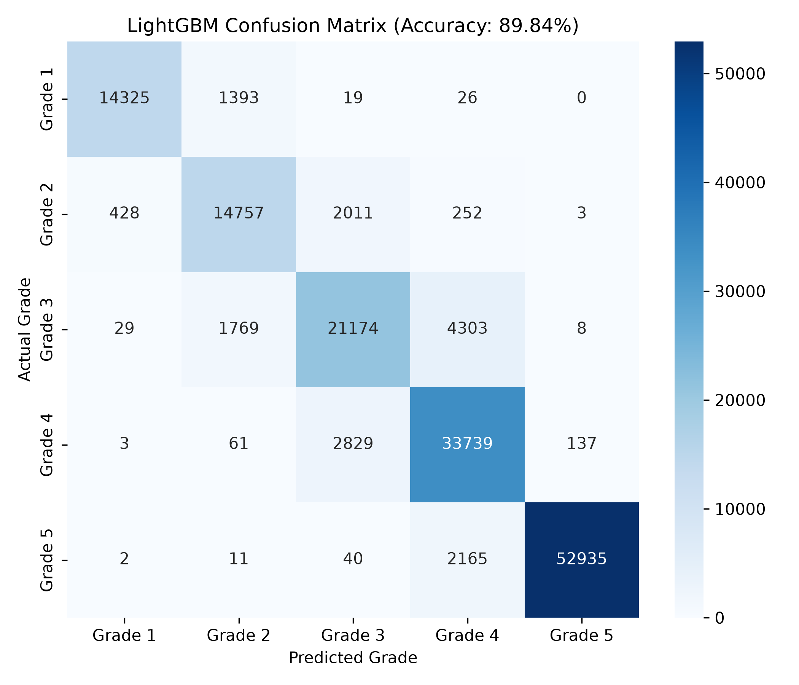
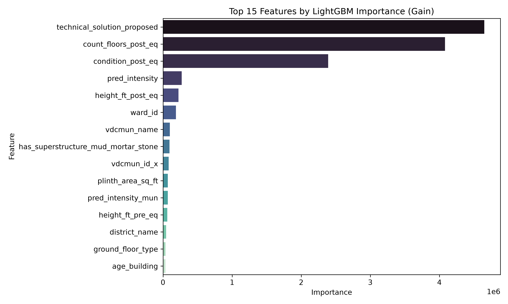

Load a ward
The ward code resolves to municipality and district through the official mapping, then pulls its seismic intensity from the ward grid.
Nepal 2015 seismic dataset
A LightGBM classifier trained on 762,000 buildings rates structural vulnerability from Grade 1 (intact) to Grade 5 (collapse), from materials, geometry and seismic intensity.
947 wards across 11 districts of the Nepal survey, drawn from the real dataset. Color is predicted seismic intensity. Click a marker to load that ward into the workspace below.
Load a ward from the map for automatic geography, or enter building parameters by hand. All 35 model features are covered.
Trained once with python train.py, evaluated on a held-out
20 percent stratified split of 152,419 buildings. Artifacts are read by
the app at startup.


Four steps, all local. No external services, no data leaves the machine.
The ward code resolves to municipality and district through the official mapping, then pulls its seismic intensity from the ward grid.
Materials, floors, geometry and post-event condition are encoded with the exact label mappings saved during training.
A gradient-boosted ensemble of 500 rounds per class scores all five damage grades and returns a full probability distribution.
The top grade comes with its confidence, probability spread and the action the grade implies for occupancy and repair.